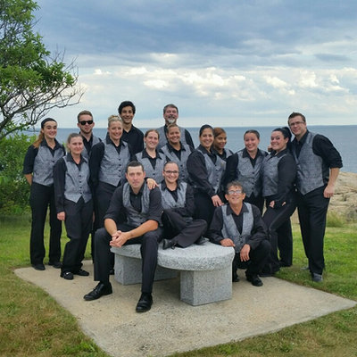

Since 1979
45+ years of making every event unforgettable.
The Beginning
Since 1979, Bruce Silverlieb and his team have provided clients with exceptional event planning services. His unique, client-centered approach will surpass your greatest expectations.
It all started when Bruce was just 15 years old, cooking for the families he babysat. What began as a teenager's creative side hustle quickly turned into something bigger. Word of mouth spread across the North Shore, and by 1979, The Party Specialist was born.
More than 45 years later, Bruce still operates with the same core team and the same unwavering commitment to making every event extraordinary. From a young cook with a passion for food to the owner of one of the North Shore's most trusted catering and event planning companies, Bruce's journey is a testament to what happens when talent meets dedication.
What hasn't changed is the philosophy: every party is treated as though it were the most important event we have ever done.
Our Philosophy
No request is too big, too bold, or too creative. Bruce's "Say Yes" philosophy means your wildest ideas become reality.
Guests at a single event
Years of experience
Years with the same core team
From intimate dinners to events for 3,000 people, The Party Specialist has done it all. Tented affairs with full field kitchens where no water or electricity exists. Silk trapeze performances that leave guests breathless. Helicopter departures complete with fireworks. If you can dream it, Bruce and his team can make it happen.
This "Say Yes" philosophy is what sets The Party Specialist apart. While others see obstacles, Bruce sees possibilities. Every challenge is an opportunity to create something extraordinary.
The Team
The Party Specialist's greatest strength is its people. The same core team has been working together for over 40 years. All three are certified in Food Allergy Awareness.

Owner · Since 1979
Bruce grew up in Swampscott and turned a teenage passion for cooking into a 45+ year career. He lives in Marblehead with his husband, Dr. Mark Korson, and their son Eli. His client-centered approach and "Say Yes" philosophy have made The Party Specialist a North Shore institution.
Production Manager · Since 1983
Tammy has been an integral part of The Party Specialist for over 40 years. From Lynn, she manages the production side of every event with precision and warmth. Clients consistently praise her helpfulness and attention to detail.
Head Chef · Since 1984
Richie has been the culinary backbone of The Party Specialist for over 40 years. From Swampscott, his mastery in the kitchen is the reason guests consistently rave about the food long after the event ends.
Community
The Party Specialist is more than a business. It is a part of the North Shore community. With deep roots in the area spanning over four decades, Bruce and his team are committed to giving back.
The Party Specialist proudly offers discounted rates to Jewish organizations in recognition of the community that has supported the business since its earliest days. Bruce is a member of both Temple Sinai and Congregation Shirat Hayam.
From synagogue events to community galas, The Party Specialist remains deeply connected to the people and places that made it what it is today.
Tell us about your event and we'll create something extraordinary together.
Check Date Availability (781) 592-0988